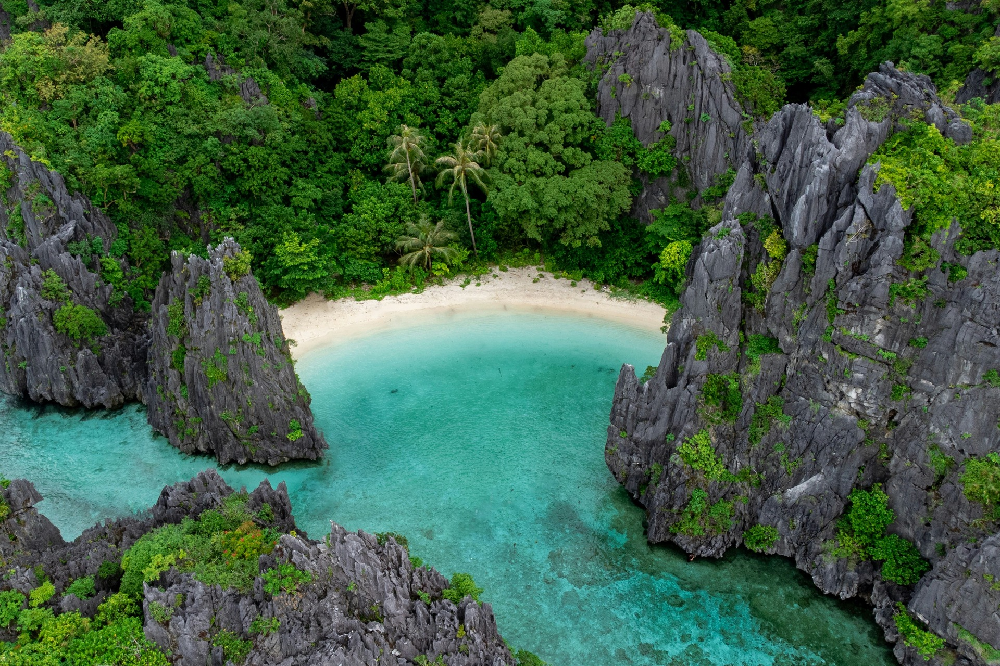
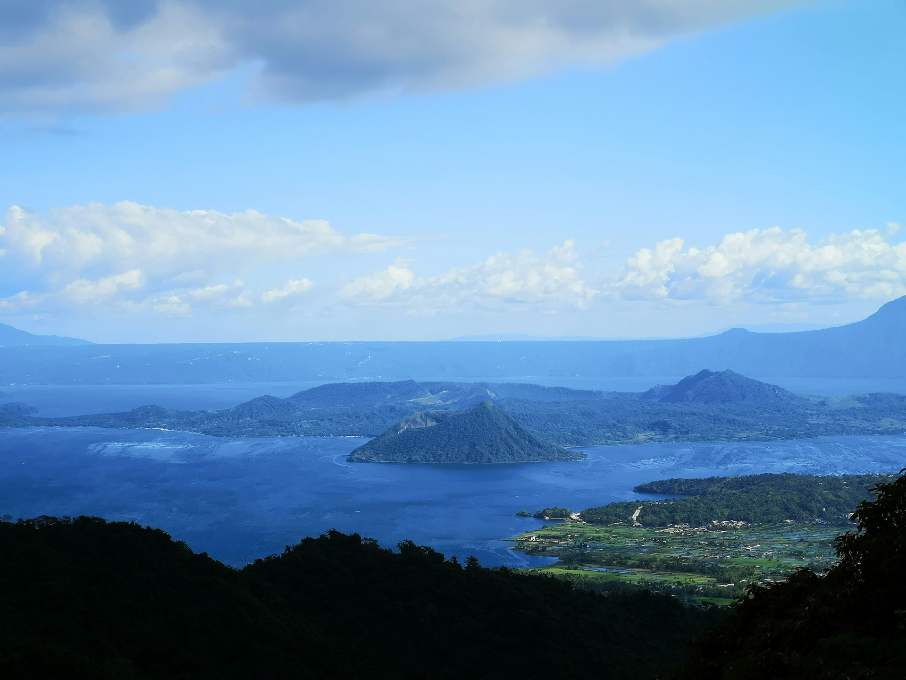
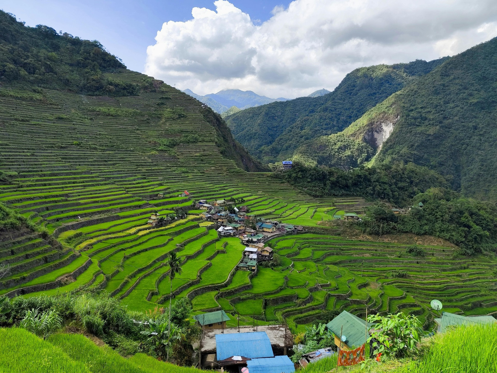

Hand-Picked Collections
Designed for the descerning traveler.

Controlled tourist activity
Secret Beach, El Nido, Palawan
Cristal clear water and white sand surrounded by sharp rocks.
🌱
5.0

Nature Conservation
Taal Volcano, Tagaytay City
Scenic view of Mt. Taal straight from your room window.
🌱
4.0

"Eight Wonder of the World"
Banaue Rice Terraces
Emerse in the beauty of our ancestor's hardwork.
🌱
5.0